Sub-partidas
Un mortero o un concreto se analiza una vez y entra como una línea en otros análisis. Si cambia, cambian todas las partidas que lo usan.
Nuevo: IngePresupuestos 3.2.0 ya disponible. Ver novedades →
Análisis de costos, metrados, cronograma, reportes y control de obra en un solo programa. Libre, gratuito y sin conexión.
Última versión: cargando…
La versión más grande hasta ahora: sub-partidas, BIM, conexión con asistentes de IA y complementos para cada país.
Un mortero o un concreto se analiza una vez y entra como una línea en otros análisis. Si cambia, cambian todas las partidas que lo usan.
Lee el IFC con sus unidades, muestra los elementos antes de importar y los vincula con sus partidas. Cuando el modelo cambia, enseña qué se movería antes de aplicarlo. Vista 3D en beta.
Trae los metrados del modelo abierto, sin exportar nada, y señala en el modelo los elementos de una partida. Con IngeTrazo 0.6.3.3 o posterior.
Claude, Codex, Gemini, Cursor o VS Code pueden consultar y editar tus presupuestos por MCP. Viene apagada y cada cambio se puede deshacer.
Formatos para ocho países, metrados de acero, ladrillos, tierras, concreto y zapatas, reportes y temas. Los instalas y activas en cada proyecto.
Ctrl+Z y Ctrl+Y en el presupuesto y los metrados, con menús nuevos para editar, reportar y metrar.
Temas de reporte por proyecto, columnas de mano de obra, materiales y equipos, y números con los separadores de tu moneda.
Importa los análisis del Excel de S10 y avisa lo que no cuadra. Y un código para recuperar la contraseña, sin internet.
Empieza de cero o abre lo que ya tienes: .prs, .sqlite, .bak, BC3, Excel o un modelo IFC.
Metrados, análisis de costos, insumos y cronograma, en la misma ventana.
Reportes en PDF, Excel y Word, y el control de la obra hasta la última valorización.
Análisis de costos unitarios, insumos, metrados, especificaciones, memoria descriptiva y resumen. Sin saltar entre programas.


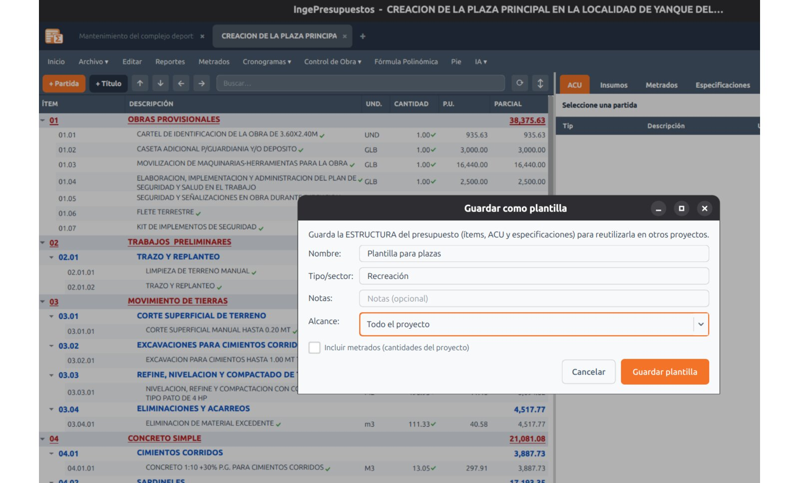
Abre un IFC, mira los elementos antes de importar y vincúlalos con sus partidas. Cuando el modelo cambia, ves qué se movería antes de aplicarlo.
La vista 3D está en beta y necesita aceleración gráfica.
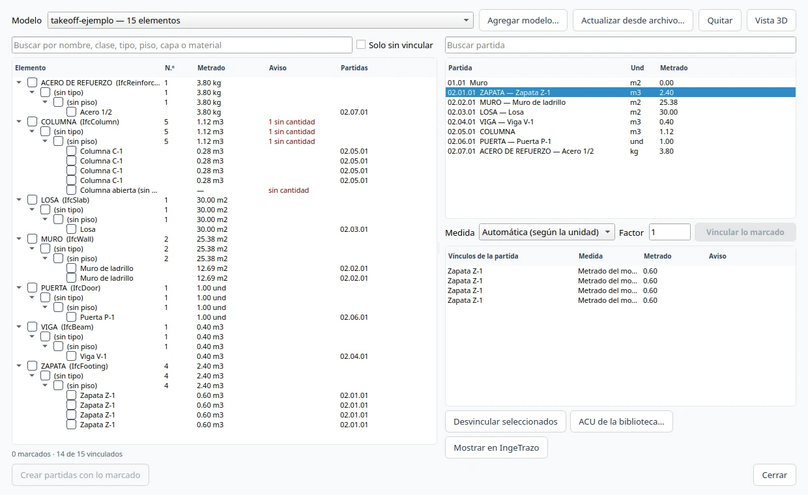
Lee directamente las bases de datos que ya tienes, sin pasar por Excel.
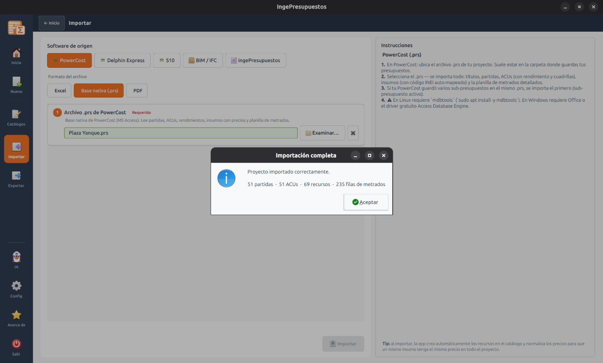
El presupuesto no se queda en el expediente: cinco pestañas siguen el día a día de la ejecución.
Cada pestaña genera su reporte en PDF, Excel, Word y ODT.
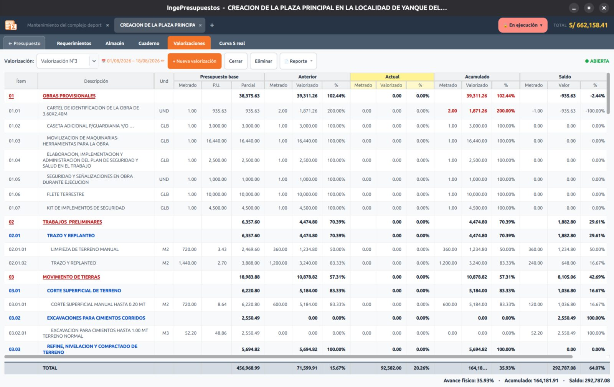
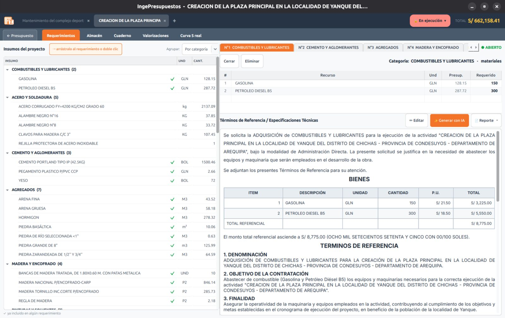
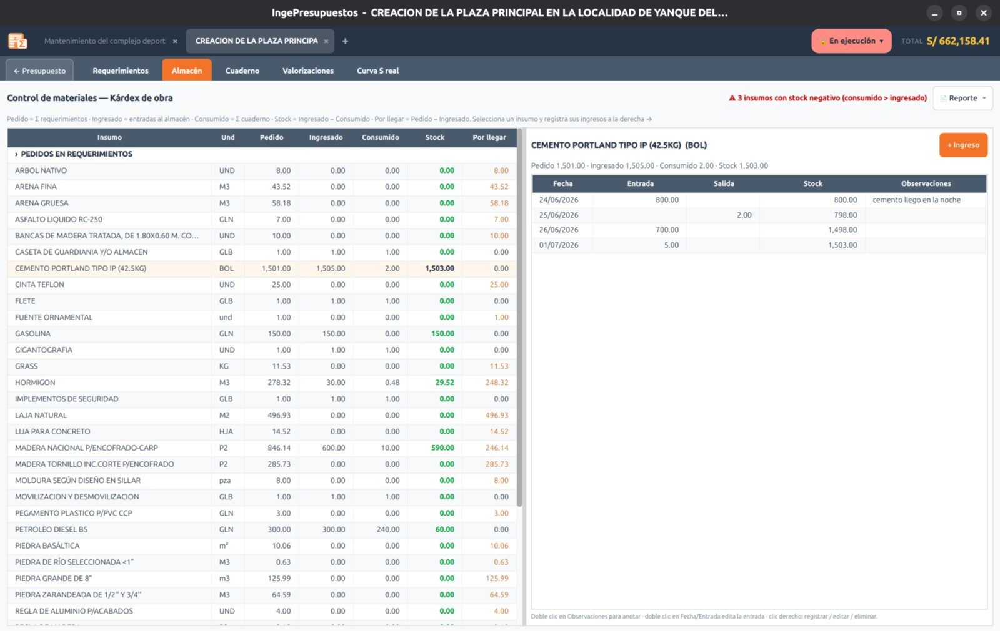
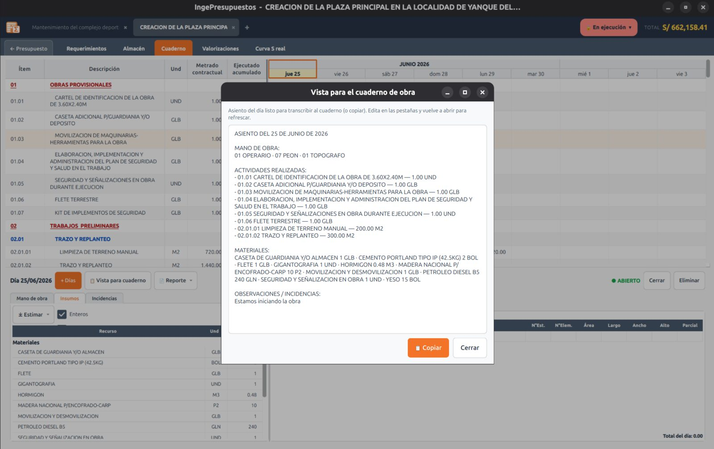
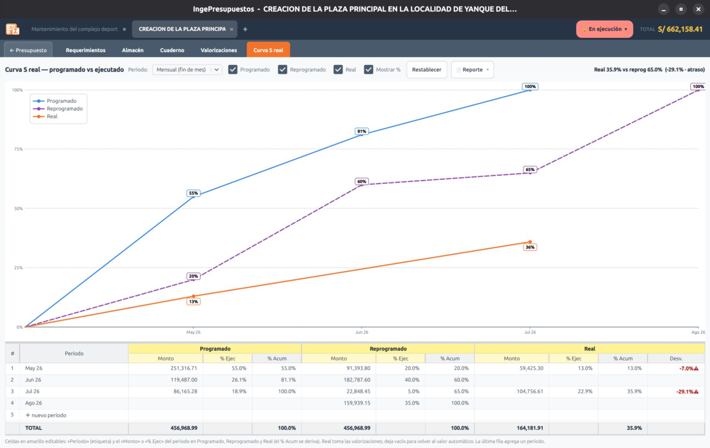
13 tipos de reporte con vista previa, del presupuesto a los cronogramas de obra.


Tuxia sugiere la estructura de partidas, redacta especificaciones y términos de referencia, genera la memoria descriptiva y detecta incoherencias.
La estructura la arma la IA; los costos los pone tu biblioteca.
Compatible con Anthropic, OpenAI, Gemini, Groq, OpenRouter y Ollama local. Usa tu propia clave.
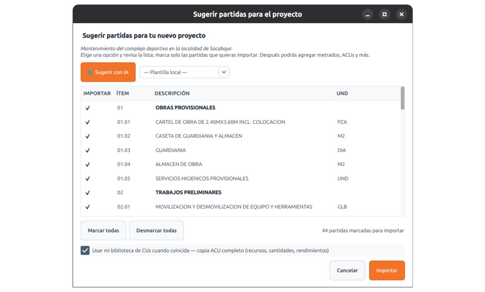

Conecta Claude, Codex, Gemini, Cursor o VS Code por MCP y pídele con palabras: consulta, compara y edita en la app abierta.
claude mcp add ingepresupuestos -- "C:\Program Files\IngePresupuestos\ingepresupuestos-mcp.exe"
El programa te muestra la línea exacta de tu sistema, lista para copiar.
{
"mcpServers": {
"ingepresupuestos": {
"command": "C:\\Program Files\\IngePresupuestos\\ingepresupuestos-mcp.exe",
"args": []
}
}
}
El bloque del archivo de configuración de tu cliente.
claude mcp add ingepresupuestos -- flatpak run com.ingepresupuestos.IngePresupuestos --mcp
Enciende antes la conexión en Configuración ▸ Conexión con IA (MCP).

Programación CPM con ruta crítica, holguras e hitos.
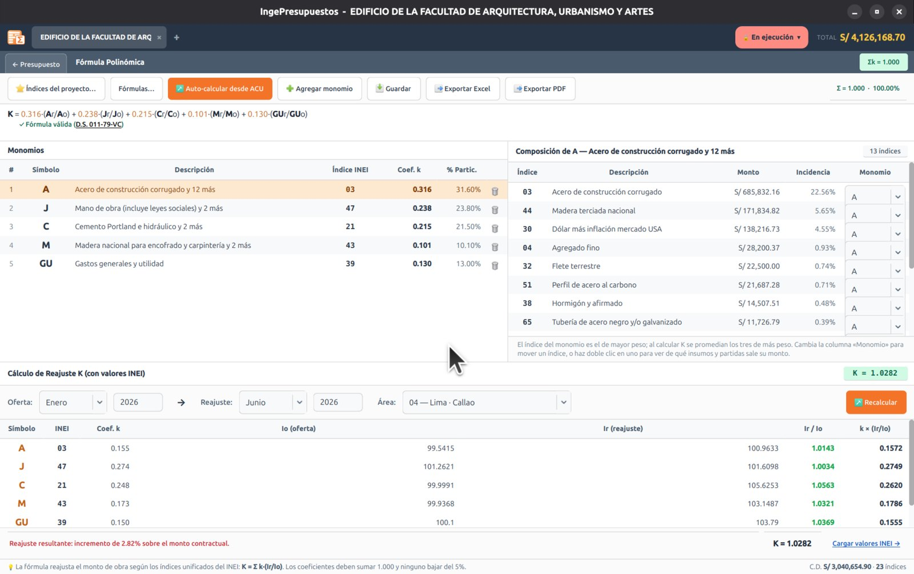
Reajusta tus valorizaciones con los índices unificados del INEI.

Tu base es un archivo .db SQLite estándar.
Veinte complementos incluidos, que se instalan y se activan solo en los proyectos donde los necesitas. Para Argentina, Brasil, Chile, España, Honduras, Italia, México y República Dominicana.
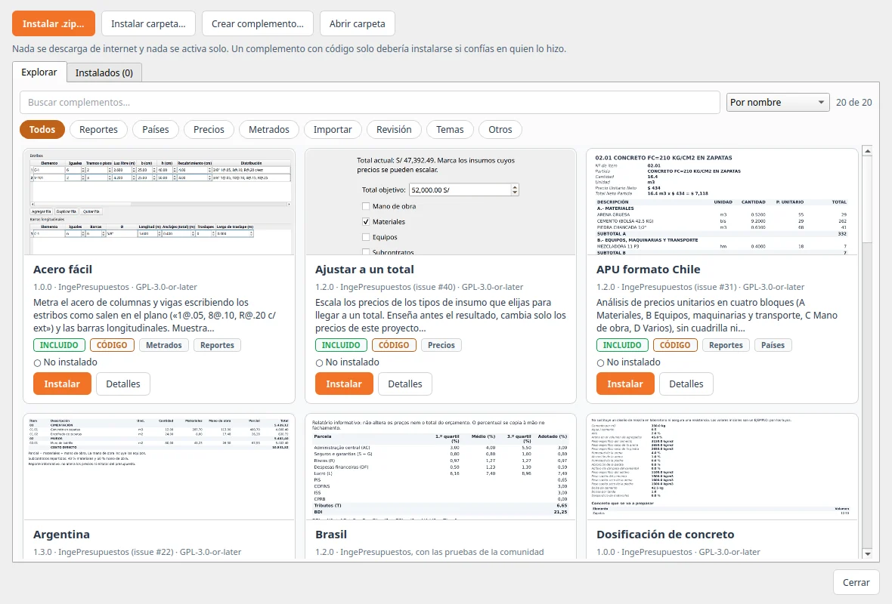
Metrados
Metra columnas y vigas escribiendo los estribos como salen en el plano.
Precios
Escala los insumos que elijas para llegar a un monto, y enseña antes el resultado.
Metrados
Materiales por m³ y por tanda con los datos que pones tú. No sustituye un diseño de mezcla.
Países
Análisis en cuatro bloques: materiales, equipos, mano de obra y varios.
Países
Informe de BDI y formatos para Brasil.
Metrados
De las dimensiones y el armado saca excavación, concreto, encofrado y acero.
Ningún complemento se descarga por su cuenta. Los que llevan código te piden permiso, y cada uno se enciende por proyecto.
Con Complementos ▸ Crear complemento… el programa te arma la carpeta de partida, en Python o solo con plantillas.
IngePresupuestos no está solo. Con el mismo autor y la misma licencia, dos programas más cubren el dibujo y el modelado de la obra. Los tres se hablan entre sí.
Dibujo 2D libre con alias de teclado, línea de comandos, espacio papel y archivos DWG y DXF de ida y vuelta. Con complementos de topografía.
Modelador 3D libre para arquitectura e ingeniería. IngePresupuestos lee los metrados del modelo abierto o su IFC para armar el presupuesto.
Todo bajo GPL-3.0-or-later, sin versiones de pago. El código de los tres vive en github.com/ingelibre.
IngePresupuestos es software libre bajo GPL-3.0. Tus presupuestos viven en tu PC, en un formato abierto, con copias automáticas diarias y sin necesitar internet. Hecho en el Perú para quienes presupuestan y construyen.
Gratis y completo, para siempre · software libre bajo GPL-3.0.
flatpak install --from https://downloads.ingepresupuestos.com/flatpak/ingepresupuestos.flatpakref
Flatpak para cualquier Linux (edición completa, con reportes ODT/ODS). También instalar con un clic.
Lo que todos preguntan antes del primer presupuesto.
No hay truco. IngePresupuestos es software libre bajo licencia GPL-3.0: la aplicación completa, sin funciones bloqueadas, sin período de prueba y sin registro. El código fuente está publicado y cualquiera puede leerlo, modificarlo y compartirlo. Si quieres apoyar el proyecto, el aporte es voluntario y no desbloquea nada, porque no hay nada bloqueado.
Sí, sin pedir permiso ni pagar licencia. La GPL permite el uso comercial y profesional sin restricciones: puedes usarlo en consultoras, contratistas, municipalidades o expedientes técnicos para el Estado. Tampoco hay límite de PCs ni de usuarios.
Sí, completamente offline. Tus datos viven en tu PC en un archivo SQLite estándar. Lo único que usa internet es el asistente IA Tuxia (y puedes usar Ollama local sin conexión).
Sí. El archivo .db es SQLite puro — ábrelo con DB Browser, DBeaver, Python o cualquier herramienta. No es formato propietario.
Sí. IngePresupuestos abre archivos .prs y bases .sqlite directamente, y con IngeConverter (incluido gratis) las copias de seguridad .bak, .bkf y .S2K. También importa Excel, PDF y proyectos XML de MS Project.
Descarga el .exe, doble click, sigue el asistente. Si sale "Windows protegió tu PC", click en Más información → Ejecutar de todas formas.
Dos opciones: descarga el .AppImage, dale permisos de ejecución y doble click (sin instalar); o instálalo como Flatpak con flatpak install --from https://downloads.ingepresupuestos.com/flatpak/ingepresupuestos.flatpakref (edición completa, con actualizaciones automáticas y reportes ODT/ODS).
El Gantt se exporta a XML MSPDI, un formato abierto. Lo abre Microsoft Project, pero también programas gratuitos como ProjectLibre, OpenProj y GanttProject. Primavera P6 también lo lee.
No. IngePresupuestos genera los reportes en PDF, Excel y Word por sí solo, sin Microsoft Office. El cronograma se exporta a un XML estándar que abre en programas gratuitos como ProjectLibre, OpenProj o GanttProject. Solo la exportación a ODS / ODT se apoya en LibreOffice, si lo tienes.
Por correo y en GitHub. También puedes escribir desde el formulario de contacto integrado en la app.